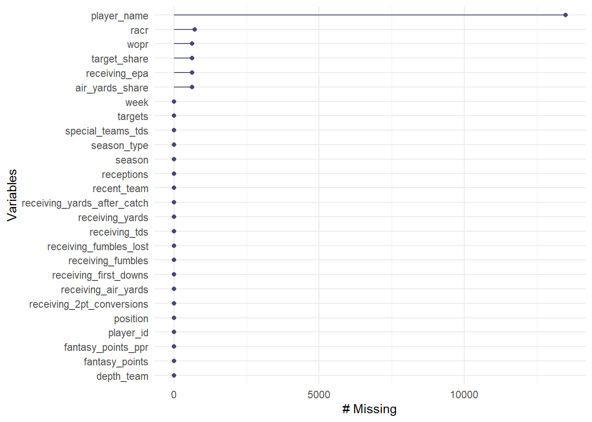
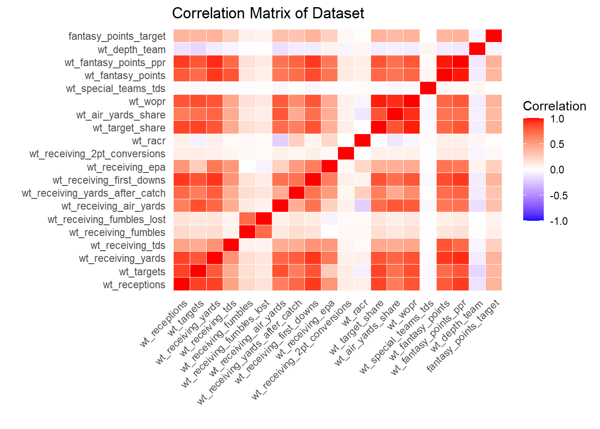
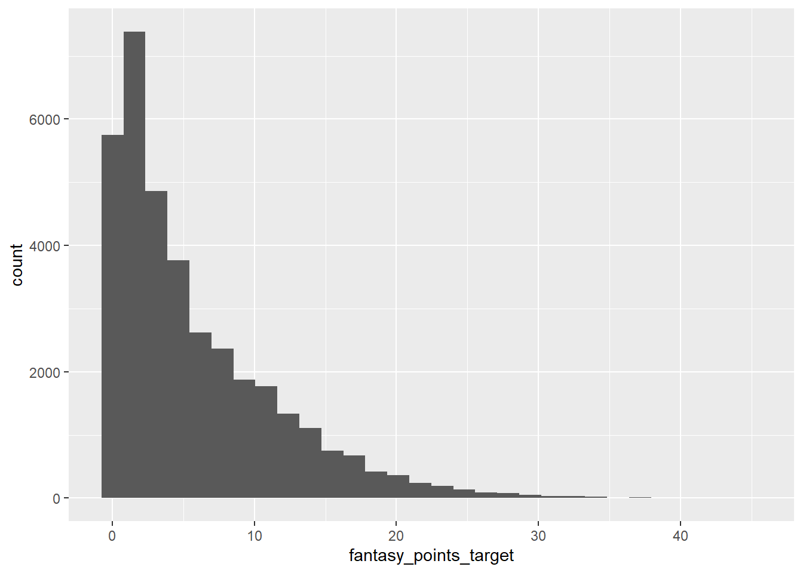
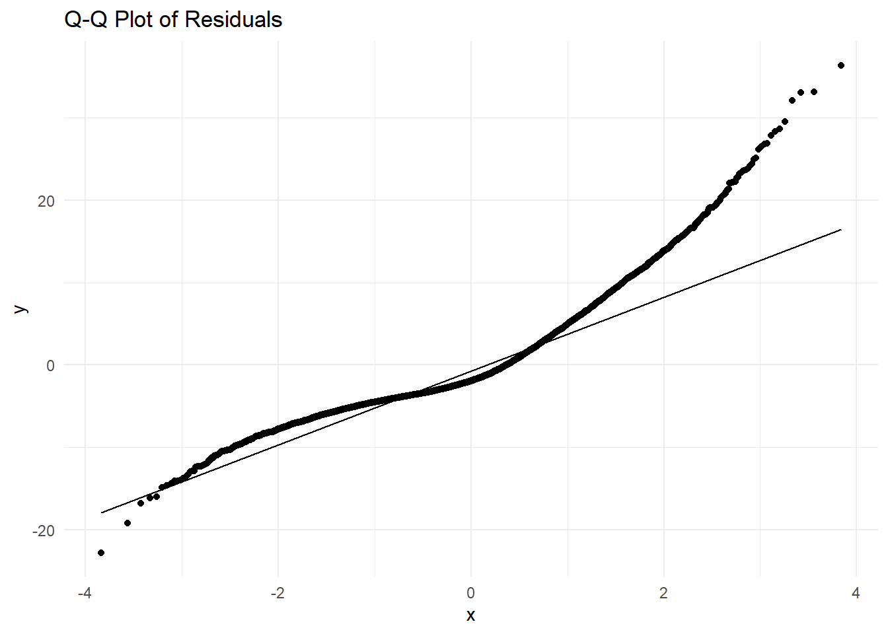
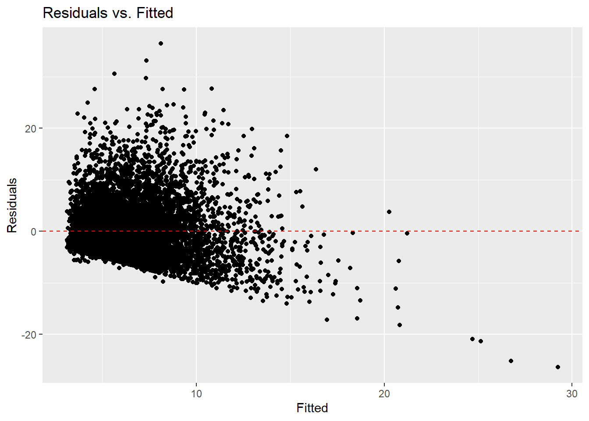
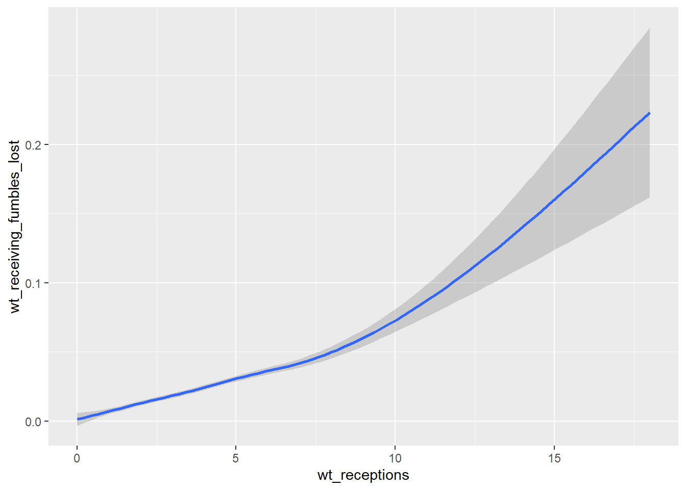

library(tidyverse)
library(nflreadr)
library(tidymodels)
library(nflfastR)
library(naniar)Introduction
I’ve played fantasy football for a decade and have always wondered how ESPN (and Yahoo, Sleeper, etc.) make their fantasy projections week to week. Where are they getting their numbers? Where are they getting probabilities from? What makes them think that Ja’Marr Chase is going to score 16.3 points for me this week vs. D? Why does his projection go up that much (or that little) if Tee Higgins happens to be out injured? Perhaps we won’t get a chance to peak inside of ESPN’s crystal ball, but maybe we can try to build our own?
In this post, I’ll attempt to build a predictive model that can output our projections for fantasy football players based on their past performance. We’ll narrow the scope to wide receivers now, but this process can largely be applied to players of other positions.
We’ll go step by step through data cleaning, feature engineering, model selection and training, and model validation before finishing up with conclusions and takeaways.
R Markdown
Data Load
We’ll start by loading in directly relevant player statistics and depth chart information before joining them together.
stats = load_player_stats(seasons = seq(2006,2023))
dc = load_depth_charts(season = seq(2016,most_recent_season())) %>% filter(position == 'WR',formation == 'Offense') %>%
select(season,recent_team = club_code,week,season_type = game_type,player_id = gsis_id,depth_team)# Filter for wide receiver plays
wr_data <- stats %>%
filter(position == "WR") %>%
# Select identifying info + receiver specfic metrics
select(player_id,player_name,position,recent_team,season,week,season_type,
receptions:fantasy_points_ppr) %>%
# Add depth chart status since we don't have participation data
left_join(y = dc,by = c('player_id','week','season','season_type',"recent_team")) %>%
# Only first 3 are counted so some players are NA'd if they're below 3rd on DC
replace_na(list(depth_team = '4')) %>%
mutate(depth_team = as.numeric(depth_team))Missingness
Let’s check if there are any missing values in the dataset we’ve created. We’ll use the library naniar to do so.
# Explore variables patterns of missingness
gg_miss_var(wr_data)
wr_data %>%
select(racr,air_yards_share,wopr,target_share,receiving_epa) -> df_miss
df_miss %>%
gg_miss_upset()
# What if we take out racr?Ideally, we’d could probably impute these values, but for the brevity, we’ll filter out the NA’s of racr, due to the intersection with other metrics. Player Name is not important for our purposes.
Time Weighting
We want our predictions for each player to be based on their past performance. However, we’d like the most recent performances to be weighed the heaviest. To do that, we can introduce a simple time-weighting scheme. In the function below, we take a data vector (ex. receptions) and return a weighted average based on the length of the vector.
# Create Time Weighting
weighted_avg = function(metric_vector){
# Take in sliding window of vector of chosen metric
n = length(metric_vector)
# Create Weights for each value based on recency
weights = seq(1,n)
# Calculated weighted average
w_avg = sum(metric_vector * weights) / sum(weights)
return(w_avg)
}Now that we have our simple time-weighting built, let’s make use of Davis Vaughn’s [slider] (https://slider.r-lib.org/articles/slider.html) package. It’s a tidy way to calculate sliding window summaries. We’ll do that to create a set of potential numeric predictors.
library(TTR)
Attaching package: 'TTR'The following object is masked from 'package:dials':
momentumlibrary(slider)
wr_data %>%
# Should remove most missingness
filter(!is.na(racr)) %>%
group_by(player_id,season) %>%
arrange(week) %>%
# Weighted Avg (moving)
# Take lag so we are not leaking any data
mutate(across(receptions:depth_team, ~ lag(slide_dbl(.x,.f = weighted_avg,.before = Inf,.complete = TRUE)),.names = "wt_{col}")) %>%
ungroup() %>%
# Convert negative fantasy points to 0
mutate(fantasy_points_target = ifelse(fantasy_points < 0,0,fantasy_points),
log_fantasy_points = log(fantasy_points_target + 1)) -> ma_wrLet’s use the example of Brandon Aiyuk as a sanity check.
ma_wr %>%
filter(season == 2023, player_id == '00-0036261') %>%
select(player_name,week,targets,wt_targets, receptions,wt_receptions, receiving_yards,wt_receiving_yards)# A tibble: 19 × 8
player_name week targets wt_targets receptions wt_receptions receiving_yards
<chr> <int> <int> <dbl> <int> <dbl> <dbl>
1 B.Aiyuk 1 8 NA 8 NA 129
2 B.Aiyuk 2 6 8 3 8 43
3 B.Aiyuk 4 6 6.67 6 4.67 148
4 B.Aiyuk 5 7 6.33 4 5.33 58
5 B.Aiyuk 6 10 6.6 4 4.8 76
6 B.Aiyuk 7 6 7.73 5 4.53 57
7 B.Aiyuk 8 9 7.24 5 4.67 109
8 B.Aiyuk 10 3 7.68 3 4.75 55
9 B.Aiyuk 11 6 6.64 5 4.36 156
10 B.Aiyuk 12 4 6.51 2 4.49 50
11 B.Aiyuk 13 7 6.05 5 4.04 46
12 B.Aiyuk 14 9 6.21 6 4.20 126
13 B.Aiyuk 15 5 6.64 3 4.47 37
14 B.Aiyuk 16 7 6.41 6 4.26 113
15 B.Aiyuk 17 8 6.49 7 4.50 114
16 B.Aiyuk 18 4 6.68 3 4.81 25
17 B.Aiyuk 20 6 6.36 3 4.60 32
18 B.Aiyuk 21 8 6.32 3 4.42 68
19 B.Aiyuk 22 6 6.50 3 4.27 49
# ℹ 1 more variable: wt_receiving_yards <dbl>A quick scan indicates that our time weighted average is calculated as intended.
Correlations
Before we start splitting data for the model, let’s take a look at variable correlations. This may influence our model choices.
# Calculate the correlation matrix
cor_matrix <- ma_wr %>%
select(starts_with("wt_"), fantasy_points_target) %>%
cor(use = "complete.obs")
# Reshape the correlation matrix for ggplot
cor_data <- reshape2::melt(cor_matrix)
ggplot(data = cor_data, aes(x = Var1, y = Var2, fill = value)) +
geom_tile(color = "white") +
scale_fill_gradient2(low = "blue", high = "red", mid = "white", midpoint = 0, limit = c(-1,1), name="Correlation") +
theme_minimal() +
theme(axis.text.x = element_text(angle = 45, vjust = 1, hjust = 1)) +
labs(title = "Correlation Matrix of Dataset", x = "", y = "")
Okay, it looks like there is a high degree of colinearity between our weighted measures. Not very surprising. We’ll use a few modeling techniques below that should address the issues of highly correlated variables.
In addition, if we look at our target variable, we notice something interesting… it’s got a skewed distribution. Should we be using linear regression?
ma_wr %>%
ggplot(aes(x = fantasy_points_target)) +
geom_histogram()`stat_bin()` using `bins = 30`. Pick better value with `binwidth`.
Let’s see what happens if we transform our target with a log-transform.
ma_wr %>%
ggplot(aes(x = log_fantasy_points)) +
geom_histogram()`stat_bin()` using `bins = 30`. Pick better value with `binwidth`.
Hmmm, our histogram still looks a bit funky. The distribution seems to have shifted closer to a bell curve we’d want for linear regression, but there are A LOT of 0s (more on that later).
Preprocess
We’ll start splitting our dataset into training and testing splits and create recipes for preprocessing in the following blocks.
library(tidymodels)
# Split
set.seed(222)
# Put 3/4 of the data into the training set
data_split <- ma_wr %>%
# Filter on relevant columns
select(starts_with('wt_'),fantasy_points_target,player_id,season,week,recent_team,
fantasy_points,fantasy_points_ppr,log_fantasy_points) %>%
# make split
initial_split( prop = 3/4)
# Create data frames for the two sets:
train_data <- training(data_split)
test_data <- testing(data_split)wt_recipe = train_data %>%
recipe(fantasy_points_target ~ .,) %>%
update_role(c(player_id,recent_team,fantasy_points,fantasy_points_ppr),new_role = 'ID') %>%
# Generally not recommended to throw out all data, but for brevity, let's remove NAs
#step_naomit(all_numeric_predictors()) %>%
step_impute_median(all_numeric_predictors()) %>%
# Remove zero variance predictors (ie. variables that contribute nothing to prediction)
step_center(all_numeric_predictors())
#
summary(wt_recipe)# A tibble: 27 × 4
variable type role source
<chr> <list> <chr> <chr>
1 wt_receptions <chr [2]> predictor original
2 wt_targets <chr [2]> predictor original
3 wt_receiving_yards <chr [2]> predictor original
4 wt_receiving_tds <chr [2]> predictor original
5 wt_receiving_fumbles <chr [2]> predictor original
6 wt_receiving_fumbles_lost <chr [2]> predictor original
7 wt_receiving_air_yards <chr [2]> predictor original
8 wt_receiving_yards_after_catch <chr [2]> predictor original
9 wt_receiving_first_downs <chr [2]> predictor original
10 wt_receiving_epa <chr [2]> predictor original
# ℹ 17 more rowstest_data %>%
filter(!is.na(wt_receptions)) -> test_data
sum(colSums(is.na(test_data)))[1] 0Model Building ——————————-
exp_recipe = train_data %>%
recipe(log_fantasy_points ~ .,) %>%
update_role(c(player_id,recent_team,fantasy_points,fantasy_points_ppr,fantasy_points_target),new_role = 'ID') %>%
# Generally not recommended to throw out all data, but for brevity, let's remove NAs
#step_naomit(all_numeric_predictors()) %>%
step_impute_median(all_numeric_predictors()) %>%
# Remove zero variance predictors (ie. variables that contribute nothing to prediction)
step_zv(all_predictors()) %>%
step_center(all_numeric_predictors())
#summary(exp_recipe)Cross-Validation + Tuning ————-
Create Model
Create specifications for elastic net model using glmnet and tune
GLM ————————–
We’ll train a general linear model (GLM). This is a type of linear regression which provides a type of built-in variable selection. The nuts and bolts of this modeling strategy are beyond the scope of this post, but for those interested in learning, there’s tons of material on a concept called regularization upon which this strategy is built.
library(glmnet)Loading required package: Matrix
Attaching package: 'Matrix'The following objects are masked from 'package:tidyr':
expand, pack, unpackLoaded glmnet 4.1-8#library(lightgbm)
#library(bonsai)
glm_spec <- linear_reg(
penalty = tune(), # Lambda (regularization strength)
mixture = tune(), # Alpha (0 = Ridge, 1 = Lasso, values in between = Elastic Net)
) %>%
set_engine("glmnet")
glm_wflow <-
workflow() %>%
add_recipe(exp_recipe) %>%
add_model(glm_spec)
wr_folds <- vfold_cv(train_data, v = 5)
# Tune the hyperparameters using a grid of values
glm_tune_results <- tune_grid(
glm_wflow,
resamples = wr_folds,
grid = 10 # Number of tuning combinations to evaluate
)Tune Model w/ Cross Validation
Examine Tuning Results
# Display tuning results
glm_tune_results %>%
collect_metrics() %>%
filter(.metric == "rmse") %>%
arrange(mean)# A tibble: 10 × 8
penalty mixture .metric .estimator mean n std_err .config
<dbl> <dbl> <chr> <chr> <dbl> <int> <dbl> <chr>
1 2.00e- 7 0.574 rmse standard 0.799 5 0.00334 Preprocessor1_Model06
2 1.36e- 6 0.840 rmse standard 0.799 5 0.00334 Preprocessor1_Model09
3 2.26e- 5 0.352 rmse standard 0.799 5 0.00336 Preprocessor1_Model04
4 2.32e- 9 0.499 rmse standard 0.799 5 0.00333 Preprocessor1_Model05
5 1.53e- 8 0.0923 rmse standard 0.799 5 0.00335 Preprocessor1_Model01
6 2.89e-10 0.801 rmse standard 0.799 5 0.00333 Preprocessor1_Model08
7 4.89e- 4 0.909 rmse standard 0.799 5 0.00333 Preprocessor1_Model10
8 9.91e- 3 0.651 rmse standard 0.800 5 0.00331 Preprocessor1_Model07
9 5.00e- 2 0.237 rmse standard 0.800 5 0.00332 Preprocessor1_Model02
10 3.95e- 1 0.326 rmse standard 0.816 5 0.00272 Preprocessor1_Model03Find the best parameters of the group. finalize_workflow() will choose the model with the optimal set of hyperparameters as found in select_best().
# Select the best hyperparameters based on RMSE
best_glm <- select_best(glm_tune_results, metric = 'rmse')
# Finalize the workflow with the best hyperparameters
final_glm_workflow <- finalize_workflow(glm_wflow, best_glm)
best_glm# A tibble: 1 × 3
penalty mixture .config
<dbl> <dbl> <chr>
1 0.000000200 0.574 Preprocessor1_Model06^ Above you’ll find the optimal configuration of the model. We won’t get too far into the weeds here, but will not that the penalty term is small (low regularization, high complexity) and the mixture (type of regularization) indicates more of a Ridge regression (more shrinkage, less variable elimination).
Below, we’ll take the best model and fit it to the entire training data set before validating it against the test set.
# Fit the finalized model on the entire training data
final_glm_fit <- fit(final_glm_workflow, data = train_data)Model Evaluation
Diagnostics
Now that we have our model fit on the full training set, let’s evaluate it, check it’s reliability and it’s compliance with key assumptions.
# Make predictions on the test set and tidy
glm_predictions <- augment(final_glm_fit, new_data = test_data) %>%
mutate(.pred_fp = exp(.pred) + 1,
.resid = fantasy_points - .pred_fp)
# Evaluate the model's performance (RMSE)
glm_metrics <- glm_predictions %>%
metrics(truth = fantasy_points, estimate = .pred_fp)
# Print the evaluation metrics
print(glm_metrics)# A tibble: 3 × 3
.metric .estimator .estimate
<chr> <chr> <dbl>
1 rmse standard 5.45
2 rsq standard 0.148
3 mae standard 4.21 # Distribution of predictors
glm_predictions %>%
ggplot(aes(x = .resid)) +
geom_histogram()`stat_bin()` using `bins = 30`. Pick better value with `binwidth`.
# Residuals vs fitted
ggplot(glm_predictions,aes(x = .pred_fp, y=.resid)) +
geom_point() +
geom_hline(yintercept = 0,linetype = "dashed",color = "red")+
labs(title = "Residuals vs. Fitted", y= "Residuals",x = "Fitted")
ggplot(glm_predictions,aes(sample = .resid)) +
geom_qq() +
geom_qq_line() +
labs(title = "Q-Q Plot of Residuals") +
theme_minimal() This plot is a bit indicting as we can see the points at the end of the QQPlot start to tail off. It suggests that there are some outliers in fantasy points scored and/or a linear model may not be the best approach for this dataset. This lines up with the inflated number of 0s seen in our target variable. We probably should not trust this model for valid inference or prediction and should continue to explore non-linear options or modifications to this model (i.e. variable interactions or transformations).
Variable Importance
final_glm_fit %>%
vip::vi() %>%
mutate(Importance = abs(Importance),
Variable = fct_reorder(Variable,Importance)) %>%
ggplot(aes(x = Importance, y = Variable, fill = Sign)) +
geom_col() +
scale_x_continuous(expand = c(0,0)) +
labs(x = "Impact")
I’m not personally not a huge fan of variable importance plots because they don’t communicate the actual “importance” of the variable to the outcome of our target. In other words, they’re not that useful (by themselves) for inference. They really just measure the impact of the variables on predictions. I’ll take a few variables on this plot as examples.
In this case, we can see that “wt_target_share” is defined as “Player’s share of team receiving targets in this game”.
It makes sense for this to have a positive impact on fantasy points scored as it directly describes fantasy opportunity for receivers. All else being equal, it’s likely that increased opportunity results in increased fantasy point value and we can reasonably say something like, “If a WR sees an increase in their opportuntiy rate due to increased skill, trust from coaches, injury to teammates, etc. we can can expect an increase in fantasy production”.
However is “receiving_fumbles_lost”, the second highest impact, reasonable? Considering that fantasy points are deducted when a player fumbles the ball in real life, this doesn’t make much sense. We’d be hard-pressed to convince anyone to target a player who fumbles the ball often. Why is this the case?
It’s likely due to an issue called collinearity. In order to fumble the ball you must first have received it. The players with the highest number of fumbles are likely the ones getting the ball thrown to their way the most and consequently getting increased opportunity to score more points in addition to fumbles. This is a prime example of an issue called multi-collinearity or a fancy way of saying that 2 predictors are highly correlated with each other. Below we can see “fumbles lost” as a function of receptions and target share, respectfully.
ggplot(train_data, aes(x = wt_receptions, y = wt_receiving_fumbles_lost)) +
geom_smooth() +
theme_minimal() +
labs(y = "Fumbles Lost", x = "Receptions")`geom_smooth()` using method = 'gam' and formula = 'y ~ s(x, bs = "cs")'Warning: Removed 2693 rows containing non-finite outside the scale range
(`stat_smooth()`).
ggplot(train_data, aes(x = wt_target_share, y = wt_receiving_fumbles_lost)) +
geom_smooth() +
labs(y = "Fumbles", x= "Target Share")`geom_smooth()` using method = 'gam' and formula = 'y ~ s(x, bs = "cs")'Warning: Removed 2693 rows containing non-finite outside the scale range
(`stat_smooth()`).
As mentioned earlier, the regularized model handles variable selection but does not completely remove the effects of multicollinearity. Multicollinearity makes inference very challenging and we will likely need a model better suited for non-linear relationships or to include more interactions to improve model performance and interpretability.
Conclusion
This was a good first step in creating a model for my fantasy football needs. There is clearly room for improvement as far as model selection goes, but it was fun to use the slider package for the first time and attempt to a transformed target variable. I have some ideas for additions to and subtractions from this model that will hopefully make it into another blog post. In the meantime, big shoutout to the nflreadr team for making this data easily available.
@Manual{, title = {nflreadr: Download ‘nflverse’ Data}, author = {Tan Ho and Sebastian Carl}, year = {2024}, note = {R package version 1.4.1.05, https://github.com/nflverse/nflreadr}, url = {https://nflreadr.nflverse.com}, }